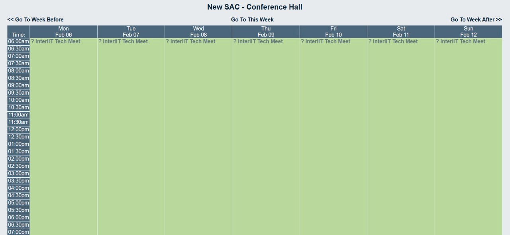
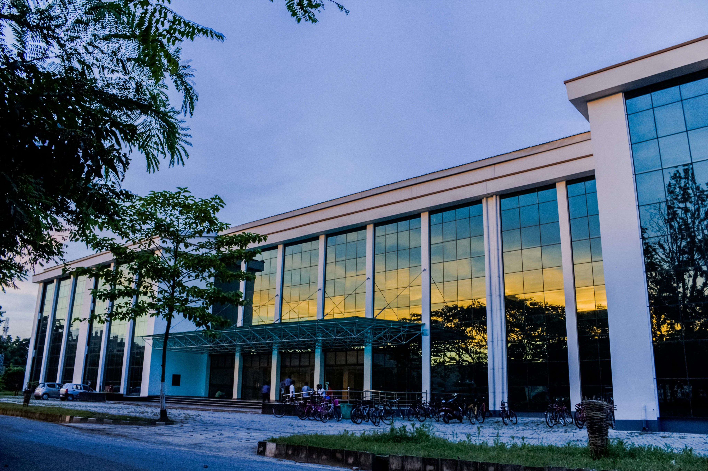
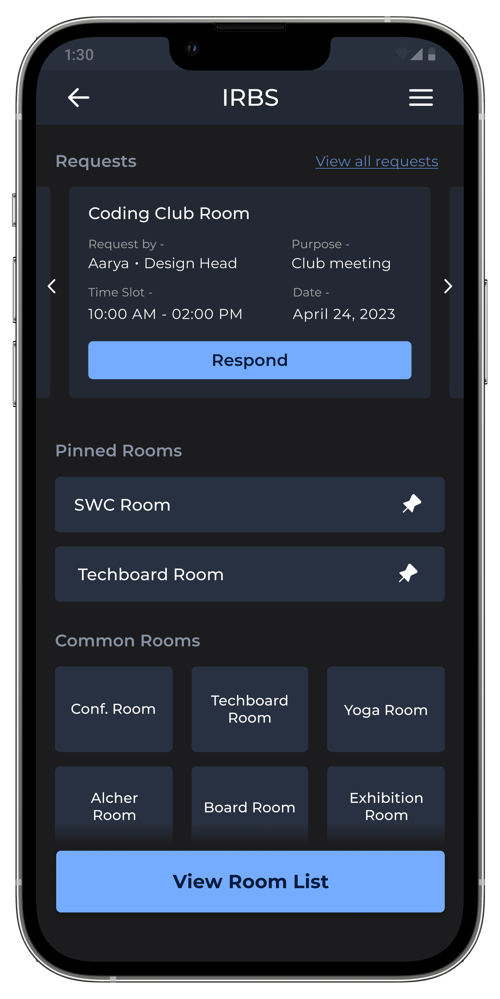
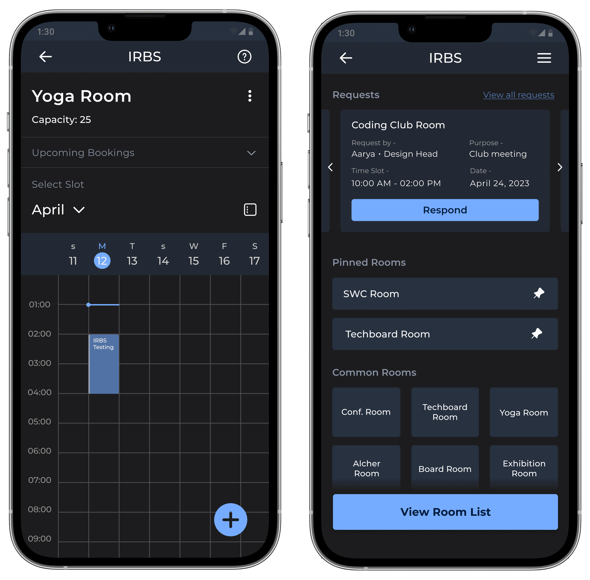
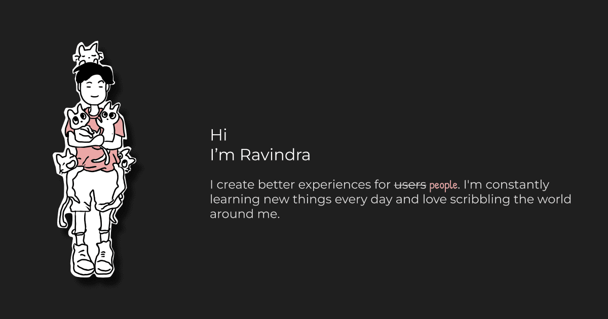
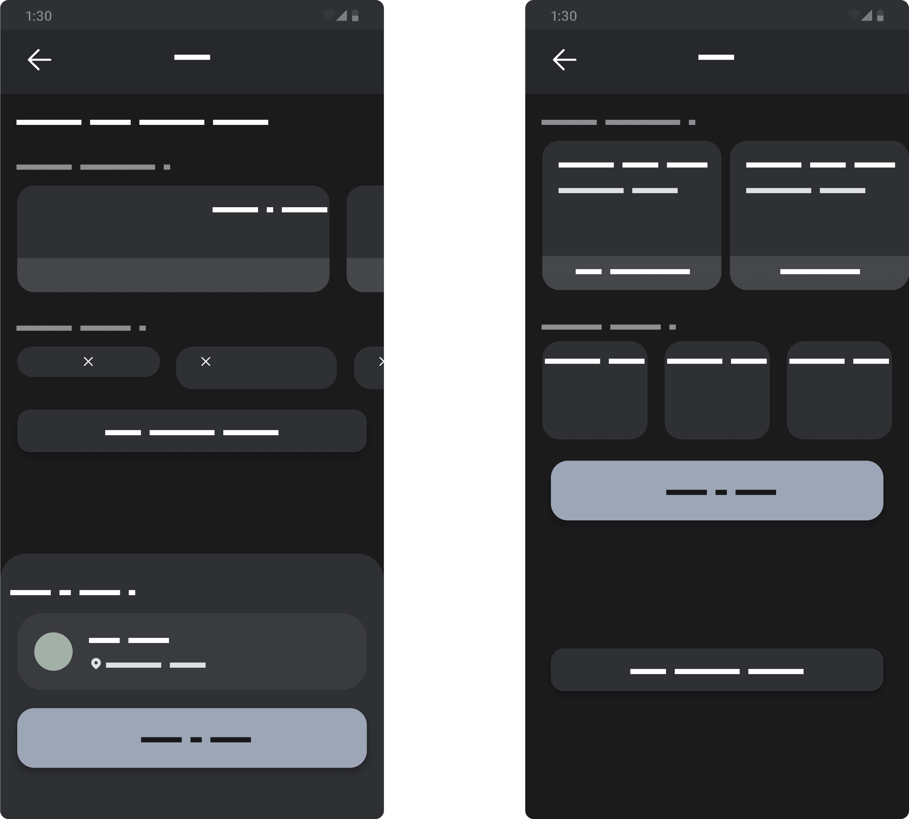
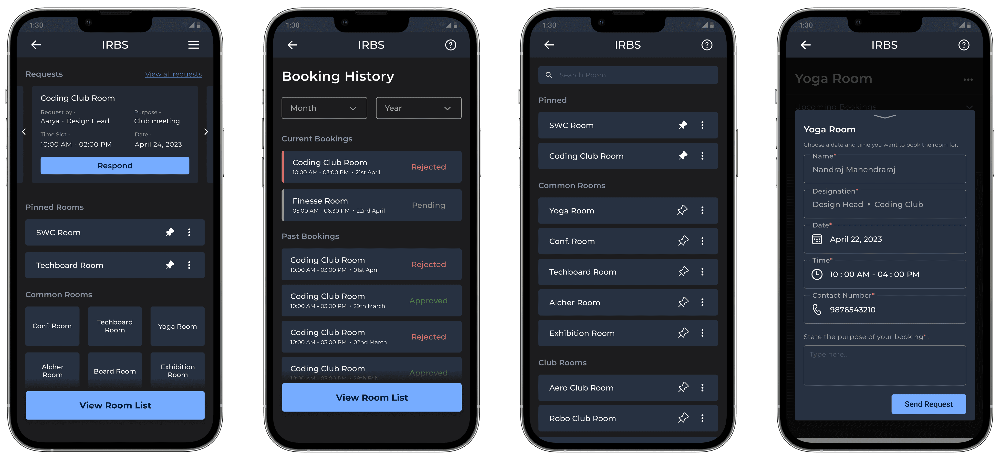
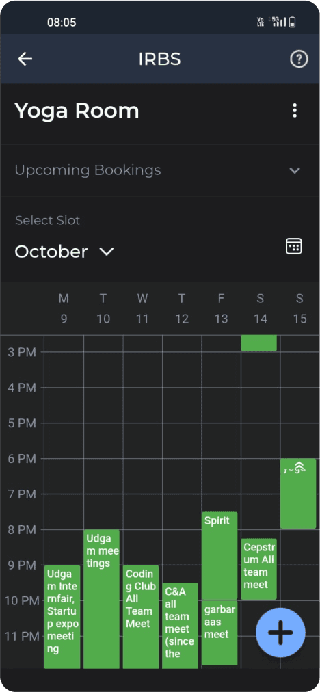

Campus students don't get proper rooms for meetings & practice sessions.
The New Students' Activity Centre at IIT Guwahati — the building that houses the club rooms, common rooms and board rooms that campus extracurriculars run out of. is the beating heart of extracurriculars at IITG — music, dance, coding, quizzing, robotics. But reserving its club rooms, common rooms and board rooms ran on a legacy web portal almost nobody could find, let alone use.
No time restrictions, confusing UI, and near-zero admin control meant rooms were double-booked, hoarded, or simply grabbed by whoever showed up first.

Four kinds of rooms, one queue of frustrated clubs.
Small focused meetings and equipment storage for individual clubs.
Large gatherings of 25+ people — yoga sessions, events, rehearsals.
Administrative and high-level meetings with the institute.
Clubs with no room of their own, fully dependent on availability.

Eleven interviews, three themes.
I interviewed 2 vice presidents, 4 club secretaries and 5 general students about how they actually got rooms — their current practices, their experience with the old portal, and the workarounds they'd invented.
Students relied on word of mouth — most didn't know the portal existed. OneStop IITG is a centralized mobile application developed by the Students' Web Committee to assist the IIT Guwahati community with daily campus life. It consolidates essential services into a single platform, offering features like academic timetables, bus and ferry schedules, room bookings and a lost-and-found portal., however, was already opened daily by everyone.
The old UI caused booking errors, offered no way to reject a request with a reason, and let incomplete forms through.
Peak periods created resource conflicts that needed hierarchical access — some requests simply matter more during a fest.
Meet students where they already are: inside OneStop.
Instead of another portal to forget, IRBS lives inside the app every IITG student already opens daily. Booking takes three steps; approval is transparent; power users stop paying the process tax.
Browse club, common and board rooms with live availability.
Calendar view shows existing bookings — no more blind requests.
A stated reason travels with every request, so approvers decide fast.

Secretaries get notified on every request and must state a reason to reject — killing the silent-limbo problem.
Frequent, trusted users earn automated acceptance; hierarchy handles high-demand fest periods.

Wireframes, walkthroughs, and a humbling beta.
We tested multiple layouts with A usability method where evaluators step through a task exactly as a first-time user would, asking at each step whether the next action is obvious and whether its result is understood. before writing code. The beta then did what betas do: it corrected us. We removed empty booking sections that confused first-timers, deferred calendar drag-select that felt clever but tested poorly, and fixed navigation behaviour that trapped users mid-flow.



Live since September 2023 — and still how rooms get booked.
